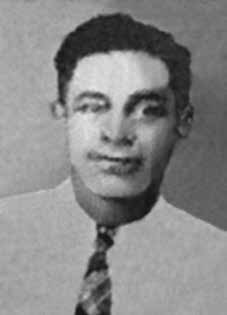

Benedito
Pereira
Serra
CIRCUNSTÂNCIAS DA MORTE
Benedito Pereira Serra morreu no dia 16 de maio de 1964, no Hospital Militar de Belém, vítima de hepatite infecciosa viral, a qual fora contraída e agravada em virtude de graves torturas e péssimas condições carcerárias a que foi submetido.
Presidente da União dos Lavradores e Trabalhadores Agrícolas do estado do Pará (ULTAP), Benedito foi preso em 9 de abril de 1964 em Castanhal (PA), pouco dias após a instalação da Ditadura Militar. De acordo com o jornal A Província do Pará, em matéria publicada no dia 10 de abril de 1964, sob o título ‘Polícia efetua mais prisões de comunistas e prossegue à procura dos que escaparam’, Benedito teria sido escoltado por “elementos do Exército e da Delegacia de Segurança Política e Social”, sendo transferido da Delegacia de Castanhal para a Delegacia Central, em Belém.
A viúva da vítima, Miracy Machado Serra, relata que quando seu marido foi preso, ele estava acompanhado de um de seus filhos, na época com 12 anos de idade. Ao chegar em casa, o garoto relatou que viu o pai ser duramente espancado. No dia 3 de maio, quase um mês após a prisão de Benedito Pereira Serra, Miracy recebeu a visita de um policial militar, do 2º Batalhão de Polícia Militar, que lhe informou que o marido encontrava-se preso naquela unidade. Desde a data da prisão, foi a primeira vez que voltou a ver o marido. Nas palavras de Miracy, Benedito já se encontrava bastante debilitado.
Nesse encontro, Benedito relatou as condições e torturas que vinha enfrentando na prisão. Benedito foi torturado e submetido a condições degradantes durante todo o período em que esteve preso no 2º Batalhão de Polícia Militar, de 9 de abril a 9 de maio de 1964. De acordo com registro do Hospital Militar de Belém, no dia 9 de maio Benedito foi transferido a esse estabelecimento em função de piora significativa em seu quadro clínico. Cinco dias após dar entrada no hospital, Benedito Pereira Serra faleceu, nos termos do atestado de óbito, em decorrência de insuficiência hepatorrenal, consequência de hepatite infecciosa.
Em depoimento registrado no 4º Ofício de Notas de Belém, o médico patologista doutor Edraldo Lima Silveira, concluiu que, considerando-se que “os presos políticos daquela época sofriam as mais variadas espécies de tortura em ambientes prisionais de péssimas condições higiênicas, é possível que a vítima tenha contraído na prisão hepatite infecciosa viral e que evoluiu rapidamente para hepatite aguda fulminante”. Os restos mortais de Benedito Pereira Serra foram enterrados no Cemitério de São Jorge, em Belém do Pará.
Benedito Pereira Serra died on May 16, 1964, at the Belém Military Hospital, a victim of viral infectious hepatitis, which had been contracted and worsened due to severe torture and terrible prison conditions to which he was subjected.
President of the Union of Farmers and Agricultural Workers of the state of Pará (ULTAP), Benedito was arrested on April 9, 1964 in Castanhal (PA), a few days after the installation of the Military Dictatorship. According to the newspaper A Província do Pará, in an article published on April 10, 1964, under the title ‘Police make more arrests of communists and continue to search for those who escaped’, Benedito was allegedly escorted by “elements of the Army and the Political and Social Security Police Station”, being transferred from the Castanhal Police Station to the Central Police Station, in Belém.
The victim's widow, Miracy Machado Serra, reports that when her husband was arrested, he was accompanied by one of his children, who was 12 years old at the time. Upon arriving home, the boy reported that he saw his father being severely beaten. On May 3, almost a month after Benedito Pereira Serra's arrest, Miracy received a visit from a military police officer, from the 2nd Military Police Battalion, who informed her that her husband was imprisoned in that unit. Since the date of her arrest, it was the first time she had seen her husband again. In Miracy's words, Benedito was already quite weakened.
In this meeting, Benedito reported the conditions and torture he had been facing in prison. Benedito was tortured and subjected to degrading conditions throughout the period in which he was imprisoned in the 2nd Military Police Battalion, from April 9 to May 9, 1964. According to records from the Belém Military Hospital, on May 9 Benedito was transferred to that establishment due to a significant worsening of his clinical condition. Five days after being admitted to the hospital, Benedito Pereira Serra died, according to the terms of the death certificate, due to hepatorenal failure, a consequence of infectious hepatitis.
In a statement recorded in the 4th Notary Office of Belém, pathologist Dr. Edraldo Lima Silveira, concluded that, considering that “political prisoners at that time suffered the most varied types of torture in prison environments with terrible hygienic conditions, it is possible that the victim contracted viral infectious hepatitis in prison, which quickly evolved into fulminant acute hepatitis”. The mortal remains of Benedito Pereira Serra were buried in the São Jorge Cemetery, in Belém do Pará.
Benedito Pereira Serra falleció el 16 de mayo de 1964, en el Hospital Militar de Belém, víctima de una hepatitis infecciosa viral, contraída y agravada por las severas torturas y las terribles condiciones carcelarias a las que fue sometido.
Presidente de la Unión de Agricultores y Trabajadores Agrícolas del estado de Pará (ULTAP), Benedito fue detenido el 9 de abril de 1964 en Castanhal (PA), pocos días después de la instalación de la Dictadura Militar. Según el diario A Província do Pará, en un artículo publicado el 10 de abril de 1964, bajo el título 'La policía realiza más detenciones de comunistas y continúa buscando a los fugados', Benedito habría sido escoltado por "elementos del Ejército y de la Comisaría Política y de Seguridad Social", siendo trasladado de la Comisaría de Castanhal a la Comisaría Central, en Belém.
La viuda de la víctima, Miracy Machado Serra, relata que cuando su esposo fue detenido estaba acompañado de uno de sus hijos, quien en ese momento tenía 12 años. Al llegar a casa, el niño relató que vio cómo golpeaban brutalmente a su padre. El 3 de mayo, casi un mes después de la detención de Benedito Pereira Serra, Miracy recibió la visita de un policía militar, del 2º Batallón de la Policía Militar, quien le informó que su esposo estaba preso en esa unidad. Desde la fecha de su arresto, era la primera vez que volvía a ver a su marido. En palabras de Miracy, Benedito ya estaba bastante debilitado.
En dicha reunión, Benedito denunció las condiciones y torturas que había estado enfrentando en prisión. Benedito fue torturado y sometido a condiciones degradantes durante todo el período en que estuvo recluido en el 2º Batallón de Policía Militar, del 9 de abril al 9 de mayo de 1964. Según registros del Hospital Militar de Belém, el 9 de mayo Benedito fue trasladado a ese establecimiento debido a un importante empeoramiento de su estado clínico. Cinco días después de ser ingresado en el hospital, Benedito Pereira Serra falleció, según consta en el certificado de defunción, a causa de una insuficiencia hepatorrenal, consecuencia de una hepatitis infecciosa.
En declaración registrada en la Notaría 4ª de Belém, el patólogo Dr. Edraldo Lima Silveira concluyó que, considerando que “los presos políticos de la época sufrían los más variados tipos de torturas en ambientes penitenciarios con pésimas condiciones higiénicas, es posible que la víctima contrajera hepatitis infecciosa viral en prisión, que rápidamente evolucionó hacia una hepatitis aguda fulminante”. Los restos mortales de Benedito Pereira Serra fueron enterrados en el Cementerio de São Jorge, en Belém do Pará.